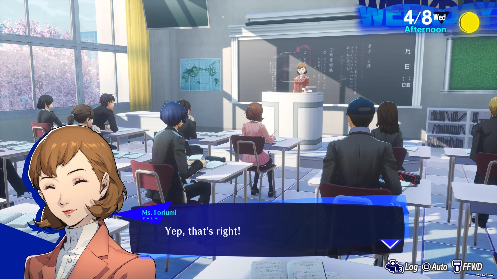
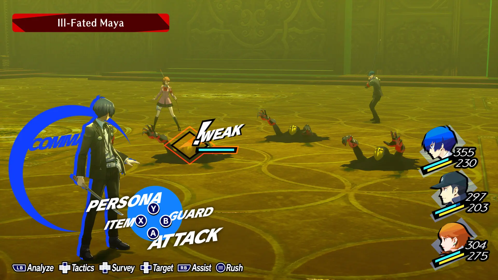
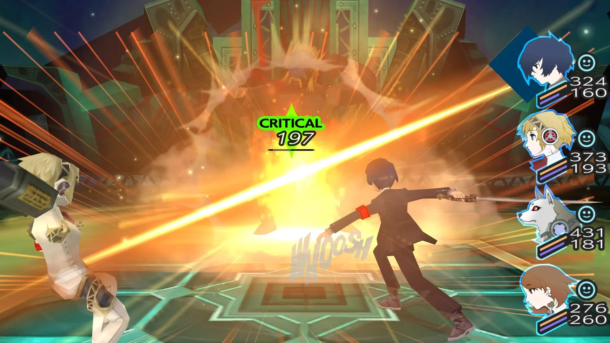
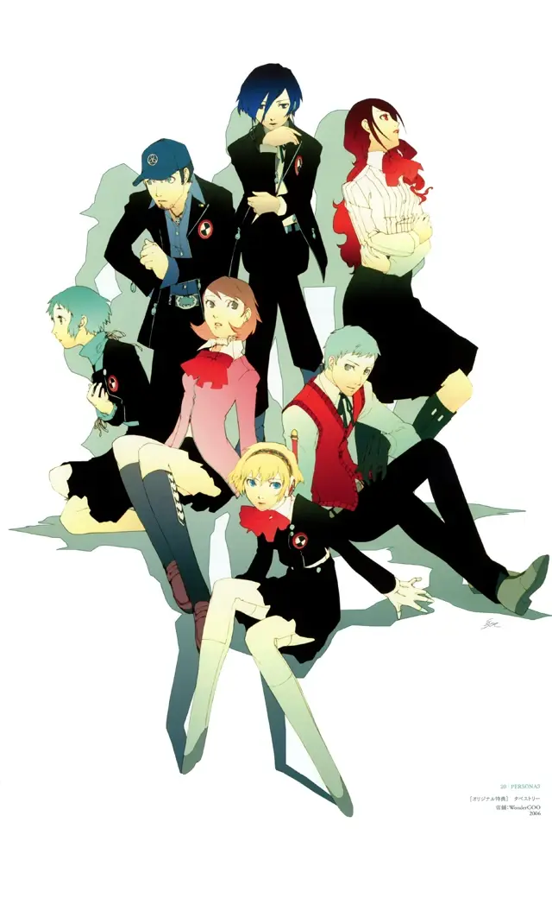

Persona 3
El título original de 2006 para PlayStation 2.
Ver más

A diferencia de los anteriores juegos de la franquicia, Persona 3 combina elementos de los juegos de rol tradicionales con los simuladores sociales.
La historia transcurre a lo largo de un año escolar japonés. Cada día se divide en varias partes, como la mañana, la tarde y la noche, durante las cuales debes asistir a clases y participar en diversas actividades en tu tiempo libre.
Debes intentar compaginar tu vida escolar con la prevención del inminente apocalipsis que amenaza con acabar con toda la vida en el planeta.





Por la noche, podés puede optar por entrar en la torre de Tártaro.
Tártaro es una torre llena de enemigos, conocidos como Sombras, que esconde secretos relacionados con los extraños sucesos que ocurren en la ciudad.
Junto a tus compañeros de S.E.E.S debes utilizar tus Personas para luchar y llegar a la cima antes de que acabe al año para así evitar el fin del mundo.
A lo largo de los años, Persona 3 tuvo distintas ediciones. Elegí una para conocer sus diferencias.
El título original de 2006 para PlayStation 2.
Ver másSuma el epílogo "The Answer" y ajustes de jugabilidad.
Ver másLa versión portátil para PSP, con protagonista femenina jugable.
Ver másEl remake moderno de 2024, disponible en todas las plataformas actuales.
Ver másLos miembros de S.E.E.S, (Specialized Extracurricular Execution Squad), son los protagonistas de esta historia.
Aunque la escuela los patrocina y los cataloga como un club escolar, su verdadero propósito es eliminar a las Sombras e investigar tanto el Tártaro como la Hora Oscura. Su asesor es Shuji Ikutsuki y Mitsuru Kirijo funge como líder del club. El protagonista termina liderando el club en muchos casos debido a sus habilidades únicas.
A excepción de Ikutsuki, todos los miembros de SEES son usuarios de Persona. Además, todos los miembros son estudiantes de la escuela Gekkoukan, excepto Ken Amada y Koromaru. Después de clases, se hospedan en una residencia estudiantil de Iwatodai.
SEES también cuenta con el apoyo del Grupo Kirijo, así como de ciertos miembros de la policía como Kurosawa, lo que les proporciona acceso a tecnología y armas anti-Sombras.

Ver más